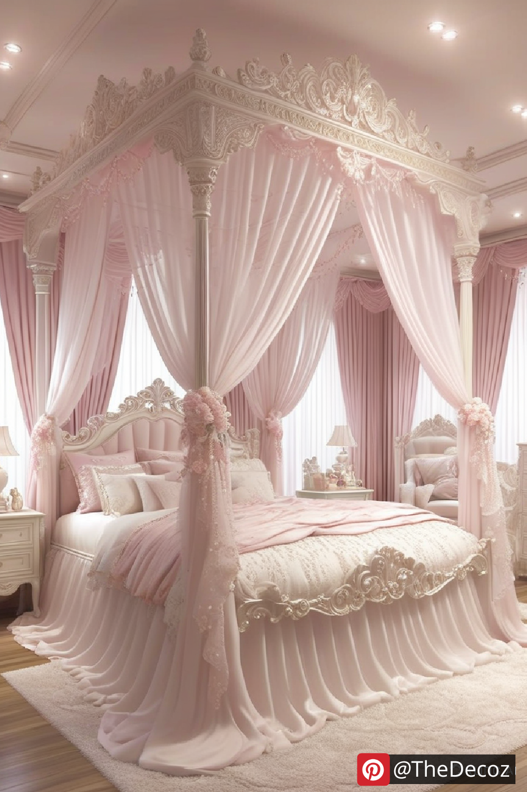
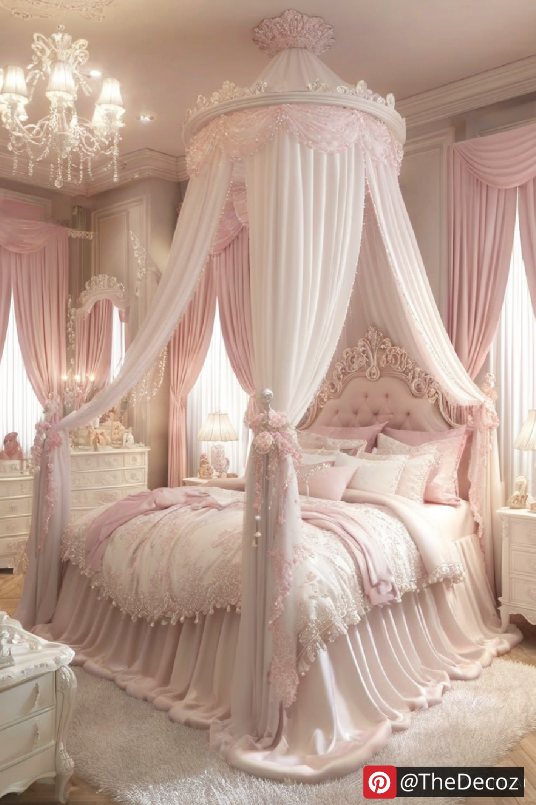
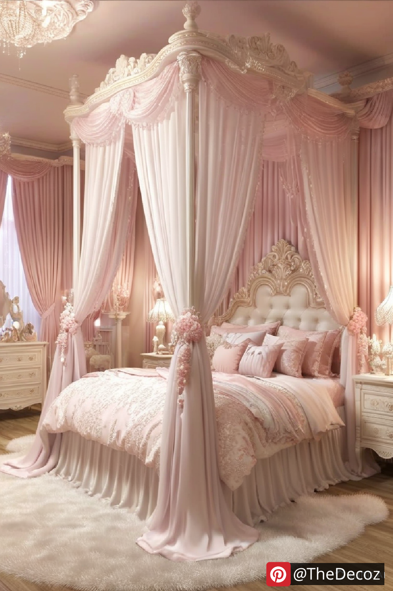
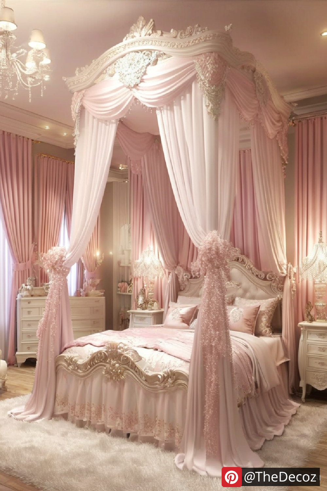
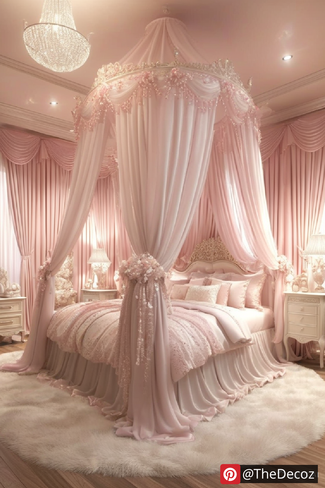

Every little girl dreams of living in a magical fairy tale, and with the right princess room decor, you can turn her bedroom into a royal sanctuary. From elegant bedding to enchanting wall art, designing the perfect princess-themed room is all about combining creativity, charm, and practicality. Whether you are starting from scratch or looking for fresh ideas, this guide will inspire you to create a stunning space fit for royalty.
The foundation of any princess room decor begins with the right color scheme. Soft pastels like pink, lavender, mint green, and pale blue create a dreamy ambiance. For a more sophisticated look, consider using gold, silver, or pearl accents to add a touch of elegance. The key is to blend complementary hues that evoke a whimsical and enchanting atmosphere.
Walls set the tone for the entire room, making them a crucial aspect of your princess-themed design. Consider these wall decor ideas:
Wall Murals and Decals: Choose peel-and-stick decals of castles, unicorns, or tiaras for an easy yet impactful transformation.
Wallpaper: Opt for floral, damask, or fairy-tale-inspired prints to enhance the room’s aesthetic.
Canopy or Drapes: Hanging sheer fabric over the bed or along a wall adds a regal touch reminiscent of a princess’s quarters.
Selecting the right furniture enhances the overall princess theme. Some essential pieces include:
Canopy Bed: A four-poster bed with a delicate, sheer canopy creates a dreamy sleeping area.
Elegant Dresser and Vanity: Look for vintage-style furniture with ornate detailing, gold trim, or pearl handles.
Charming Seating: A small tufted armchair or a plush ottoman provides a cozy reading nook.
Bedding plays a significant role in tying the theme together. Choose bedspreads, pillows, and throws featuring princess crowns, floral patterns, or soft, shimmering fabrics. Satin, velvet, and silk materials add a touch of luxury, ensuring your little one feels like true royalty.
Proper lighting can elevate the dreamy ambiance of the room. Here are some lighting ideas:
Chandeliers: A mini crystal chandelier adds a grand and elegant touch.
Fairy Lights: String lights along the walls or canopy bed create a soft and magical glow.
Lamps with Themed Shades: Choose lampshades featuring princess motifs or soft pastel colors for a cohesive look.
Adding personal touches makes the space feel unique and special. Consider these additions:
Custom Name Signs: Display your child’s name in a cursive wooden cutout or a decorative frame.
Storybook Displays: Arrange classic fairy-tale books on shelves for both decor and bedtime reading.
Themed Rugs and Curtains: Look for rugs with princess patterns or velvet curtains with tiebacks to enhance the theme.
Creating a princess room doesn’t have to be expensive. Here are some budget-friendly DIY ideas:
Handmade Wall Art: Paint a crown or castle on a canvas for a personalized touch.
Upcycled Furniture: Repurpose an old dresser with new paint and princess-themed knobs.
DIY Tulle Canopy: Use sheer fabric and embroidery hoops to craft an affordable canopy.
Designing a princess-themed room is a fun and rewarding project that brings joy and creativity to your child’s space. Whether you go all out with elaborate decor or keep it simple with subtle princess touches, the key is to create a space where your little one feels like royalty. With the right combination of colors, furniture, accessories, and DIY elements, you can turn any bedroom into a dreamy palace fit for a princess.
Start planning today and watch your child’s eyes light up as they step into their fairy tale world!
    